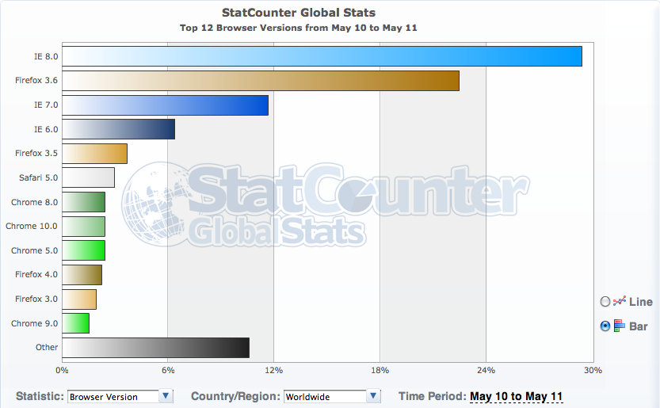

Cross-browser Coding
There are various types of web browsers, and the compatibility of web pages differ among the browsers. The term "cross-browser" refers to the capibility of a web page to support all of the different browsers. This section would discuss the main issues of cross-browser coding.
The Most Commonly Used Web Browsers (As of 2011)
The following graph indicates the most commonly used web browsers, as of 2011.

The details of the most common browsers are as indicated below.
- IE 8.0 : A browser developed by Microsoft. Pre-installed on Windows 7 and later. IE 8.0 is exclusive for Windows operating systems. IE 8.0 does not support HTML5 nor CSS3.
- IE 7.0 : A browser developed by Microsoft. Used mainly on Windows XP and Windows Vista systems. IE 7.0 does not support HTML5 nor CSS3. It also has slight bugs, and recent libraries may not operate correctly.
- IE 6.0 : A browser developed by Microsoft. Pre-installed on Windows XP and older. IE 6.0 does not support HTML5 nor CSS3. It also has a bugs (more than IE 7.0), and recent libraries may not operate correctly.
- Firefox : A browser developed by Mozilla. Firefox supports both HTML5 and CSS3. It is also compatible with Windows, Mac OS X, and Linux systems.
- Safari : A browser developed by Apple. Pre-installed on Mac OS X, but also compatible with Windows. Safari supports both HTML5 and CSS3. However, some web pages may appear different compared to other browsers, such as Firefox and Chrome, due to differences in default font settings.
- Chrome : A browser developed by Google. Chrome supports both HTML5 and CSS3, and is compatible with Windows, Mac OS X, and Linux systems.
Issues Regarding Cross-browser Coding
As described in the previous section, their are various types of web browsers, and newer versions are released every once in a while. Some browsers may be faster and more stable than others, while some provide a wide variety of add-ons. For example, in this course, we are using Firefox as a standard browser instead of Safari. This enables us to use an add-on called Firebug, for debugging errors and adjusting parameters.
Each user may have their own preference of which browser to use upon surfing the web. Therefore, it is very important to create a web site which is compatible for all browsers. For example, if you were to create a web site exclusively for IE 7.0 and later, only 40% of all internet users would be able to view your site. This may not be a problem if all viewers of your web site were to have the same type of web browser. However, in most cases, it is better to make it viewable by the entire public. In the most common cases today, web sites tend to officially support at least IE 7.0 and later. They may also support third-party web browsers such as Safari, Firefox, and Chrome.
Speaking of IE 6.0, it is said to be one of the legacies, since it has bugs that prevent some recent JavaScript libraries from operating correctly. As for Safari, Firefox, and Chrome, they are equipped with automatic updating functions, so the version number should not be a problem, as long web sites are compatible with the most recent version.
Issues of HTML5
HTML5 is a relatively new standard for coding web pages, and it may encounter problems when viewed by older browsers. For example, IE 7.0 does not support newly-introduced tags of HTML5, such as the "article" tag. Therefore, the contents many not appear, or styles may be applied properly. However, such tags exclusive for HTML5 are very useful among coding high quality web pages, and enables web creators to put state-of-the-art features into practice, with fewer lines of code.
The following table indicates the trade-off between older versions and newer versions of standards and web browsing software.
|
Older Versions |
Newer Versions |
|
|---|---|---|
|
Features
|
Less Features Slower Performance |
More Features Faster Performance |
|
Number of Users
|
More Users |
Less Users |
|
Efficiency of Coding
|
Low |
High |
While newer versions provide higher quality and efficiency, we would need to care about maintaining backward compatibility with existing versions. For example, when coding a web page with HTML5, it is important to provide minimum support to users with older browsers, while providing the leading-edge functions for users with the newest browsers.
Providing Support for HTML5 to Older Browsers
In order to maintain backward compatibility for HTML5 with older browsers, html5.js may be a solution. This JavaScript library provides support for HTML5 to older browsers, which do not support HTML5 by default. It order to make use of this library, all you have to do is add the following tags within the "head" element.
<!--[if lt IE 9]>
<script src="http://html5shim.googlecode.com/svn/trunk/html5.js"></script>
<! endif=""></!>
As shown above, the usage of html5.js is very easy, so we recommend you add the tags for utilizing html5.js, when coding in HTML5.
In This Section...
In this section, you have learned about cross-browser coding, and the issues related to it. Also, you have learned how to maintain backward compatibility for HTML5 with older versions of web browsers.